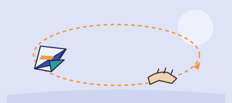

Lámina A7 · Capítulo 4
Regreso
Un avión que vuelve, basado en el Crescent Boomerang que lanzó Seunghoon Lee
Bumerán · lanzamiento de lado
Imprimir este modelo
De un vistazo
- Tiempo
- 15–20 min · 10 pasos
- Necesitas
- 1 hoja A4 o Carta · una regla
- Punto de equilibrio
- a 74 mm de la punta (A4)
- Círculo
- radio de unos 0,45–0,75 m
- Original
- Crescent Boomerang · acrobacias ganadoras de Seunghoon Lee, Red Bull Paper Wings 2022
- Vuelo esperado
- Vuelve · lanzamiento de lado
Cómo vuela
Lanza Regreso de lado, con las alas de pie, y volará en círculo y volverá hacia ti.
Las alas empujan el avión hacia donde miran. Las alas planas lo empujan hacia arriba. Ponlas de lado y el empujón apunta hacia un lado, hacia el centro de un círculo.
Si levantas los bordes de atrás, las alas trabajan más y el círculo se hace más pequeño. Así se ajusta: con los bordes de atrás, no lanzando más fuerte.
Las aletas de atrás mantienen la punta en la dirección del círculo. Plegado con una hoja A4, debería equilibrarse a unos 74 mm de la punta. Nuestra versión no se ha probado. Cuéntanos cuánto se acercó al volver.
Hazlo
Qué necesitas Una hoja rectangular y una regla. Puedes usar papel sin imprimir.
-
Paso 1 / 10
Marca el centro
Recorta la hoja por el borde grueso. Cara impresa hacia arriba y un borde corto lejos de ti. Dobla la hoja por la mitad a lo largo, hacia atrás, y vuelve a abrirla.
-
Paso 2 / 10
Esquinas al centro, a 1 mm
Dobla las dos esquinas de arriba para que su borde quede a 1 mm del doblez central. Arriba queda un tramo plano de 2 mm.
-
Paso 3 / 10
La punta hasta la marca
Marca el doblez central a 50.5 mm del borde de abajo. Baja toda la parte de arriba hasta que la punta toque la marca.
-
Paso 4 / 10
Esquinas nuevas al centro y abre
Lleva las dos esquinas nuevas de arriba a 1 mm del centro, con todas las capas. Marca bien y vuelve a abrirlas.
-
Paso 5 / 10
Bordes hasta las marcas
Dobla cada borde largo exterior hasta la marca que acabas de hacer, a 1 mm de ella. La parte de abajo de la hoja queda plana.
-
Paso 6 / 10
Vuelve a doblar las esquinas
Vuelve a doblar por las marcas del paso 4, con las tiras por dentro. Los bordes delanteros quedan dobles.
-
Paso 7 / 10
Bloquea las solapas
Sube hasta el tope la puntita que asoma por debajo de las solapas y métela bajo sus bordes. Las solapas ya no se abren.
-
Paso 8 / 10
Cierra el cuerpo
Dobla la mitad derecha por detrás de la izquierda siguiendo el doblez central. Las solapas quedan por fuera.
-
Paso 9 / 10
Dobla un ala y luego la otra
Marca 9.3 mm desde el doblez central en la punta y 24 mm en la cola. Dobla el ala de arriba por esa línea con una regla. Dale la vuelta y dobla la otra igual.
-
Paso 10 / 10
Aletas y cola
Dobla hacia arriba los 10 mm exteriores de cada ala para hacer una aleta, con una regla. Levanta los dos bordes de atrás: cuanto más los dobles, más cerrado será el círculo.
Lánzalo
Sujétalo con las alas en vertical. Gira el cuerpo y suéltalo de lado a la altura del pecho.
Ajústalo
| Si… | Prueba esto |
|---|---|
| No vuelve | Levanta los dos bordes traseros. Más curva, círculo más pequeño. |
| Se clava en el suelo | Aplana las alas y levanta un poco más los bordes traseros. |
| Se vuelca y baja en espiral | Levanta cada punta unos 10 mm por encima del pliegue del cuerpo, las dos a la misma altura. |
Qué probar. Estos ajustes siguen cómo se comportan los planeadores de papel. Aún no se han probado en este modelo.
Por qué existe

De dónde viene
Seunghoon Lee, profesor de ciencias de Corea del Sur, ganó la final de acrobacias de Red Bull Paper Wings el 14 de mayo de 2022 con una actuación de un minuto, y este bumerán volvía a su mano. No encontramos el nombre de quien lo diseñó: su canal WePlay publicó el mismo plegado en 2018, y «Crescent Boomerang» parece ser el nombre que le da Foldable Flight.
Regreso es la versión de Open Flight. La secuencia de dobleces deriva de ese diseño; los esquemas, textos e ilustraciones son nuestros, hechos a partir de la geometría de los dobleces. No se copia nada de los vídeos. Red Bull aparece solo como dato; no implica respaldo.
Toma del Crescent Boomerang la punta doble bloqueada, la base inclinada de las alas y las aletas.
Prueba esto
¿La cola decide el tamaño del círculo?
Primero, predice. Predice primero: con los dos bordes de atrás levantados, ¿el círculo será más grande o más pequeño?
- Pliega un Regreso y ponte sobre una marca en el suelo.
- Lánzalo de lado cinco veces con los bordes de atrás planos. Marca cada aterrizaje.
- Levanta los dos bordes de atrás a lo largo.
- Lánzalo cinco veces más igual y marca los aterrizajes.
- Mide a qué distancia de tu marca queda cada aterrizaje.
En qué fijarte. Fíjate si con la cola levantada aterriza más cerca de tu marca, y si cae en picado cuando las alas no están planas.
Más a fondo
De lado, toda la sustentación se convierte en la fuerza hacia dentro de un círculo: ½ρv²·S·CL = m·v²/r. La velocidad se cancela, así que r = 2m / (ρ·S·CL). Con 4,4 g de papel y 164 cm² de ala, un coeficiente de sustentación de 0,6–1,0 da un radio de unos 0,45–0,75 m. El círculo depende de la masa, de la superficie del ala y de cuánto trabaja el ala, que fija la cola levantada, no de la fuerza del lanzamiento.
Regreso mide 167 mm de largo y 143 mm de envergadura, un alargamiento de 1,24. Su equilibrio (74 mm) queda cerca del principio del margen estimado del centro de sustentación (68–104 mm), así que su estabilidad de cabeceo es modesta; un clip adelanta el equilibrio a unos 68 mm. La cola levantada hace dos cosas: sostiene la punta para que no caiga en picado y fija el tamaño del círculo. Son estimaciones a partir de la geometría de los pliegues.
Haz una variante en el laboratorio ↗
Fuentes
- NASA Glenn Research Center · Beginner’s Guide to Aeronautics: Four forces on an airplane · Peso, sustentación, resistencia y empuje.
- NASA Glenn Research Center · Beginner’s Guide to Aeronautics: Aircraft elevator · Cómo un borde trasero levantado sube el morro.
- NASA Glenn Research Center · Beginner’s Guide to Aeronautics: Aircraft rotations · Cabeceo, alabeo y guiñada.
- Red Bull · Red Bull Paper Wings World Final 2022 results · Seunghoon Lee, primero en acrobacias con 46 puntos.
- WePlay · Boomerang plane (2018) · El mismo plegado, publicado cuatro años antes de la final; sin autor.
- Foldable Flight · Crescent Boomerang tutorial (2022) · La secuencia de dobleces de la que derivan nuestros esquemas.